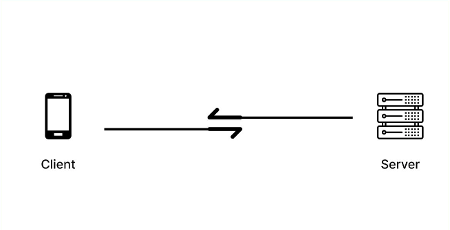

HTTP Explained
HTTP stands for Hypertext Transfer Protocol
HTTP (Hypertext Transfer Protocol) is a protocol used for exchanging information over the internet.
HTTP is like the delivery system for information on the internet. It makes sure information goes from one place to another,
like how ships carry goods across the ocean. It's the foundation of the World Wide Web.

JavaScript
JavaScript is a scripting language used to create and control dynamic website content, i.e. anything that moves, refreshes, or otherwise changes on your screen without requiring you to manually reload a web page.
var count = 1;
console.log("Display Count = " + count);
AI
ChatGPT: AI, or Artificial Intelligence, refers to the development of computer systems capable of performing tasks that typically require human intelligence. It involves the creation of intelligent machines that can perceive, reason, learn, and interact with their environment.
AI systems aim to replicate or simulate human cognitive abilities, such as problem-solving, decision-making, natural language processing, and pattern recognition. These systems use algorithms, data, and computational power to analyze information, make predictions, and provide insights.
AI can be classified into two broad categories: Narrow AI and General AI. Narrow AI, also known as Weak AI, is designed for specific tasks and operates within predefined boundaries. Examples of Narrow AI include voice assistants like Siri and Alexa, recommendation systems, and image recognition algorithms. General AI, on the other hand, refers to highly autonomous systems that possess the ability to understand, learn, and perform any intellectual task that a human being can do. General AI aims to exhibit human-like intelligence across a wide range of domains and is still a topic of ongoing research and development.
AI techniques encompass various subfields, such as machine learning, natural language processing, computer vision, robotics, and expert systems. Machine learning, in particular, has gained significant attention and success in recent years. It involves training algorithms with large datasets to recognize patterns and make predictions without being explicitly programmed.
AI finds applications in numerous domains, including healthcare, finance, transportation, education, entertainment, and more. It has the potential to automate routine tasks, enhance decision-making, improve efficiency, enable personalized experiences, and drive innovation across industries.
It's important to note that while AI has made significant advancements, it still has limitations. AI systems can be biased, lack common sense, and struggle with context and complex reasoning. Ethical considerations, transparency, and responsible development are critical to ensure AI is used for the benefit of society.
Overall, AI represents a rapidly evolving field with the goal of creating intelligent machines that can augment human capabilities and solve complex problems.